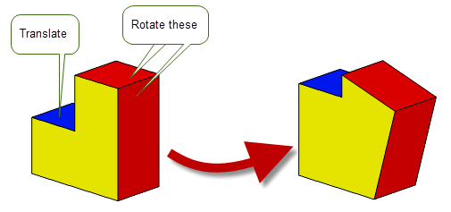
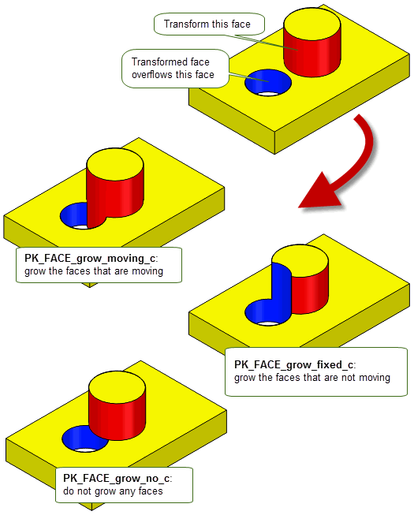
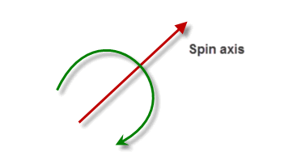
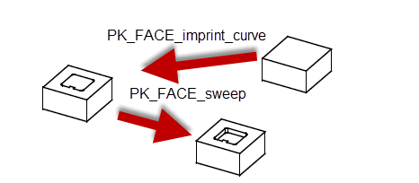
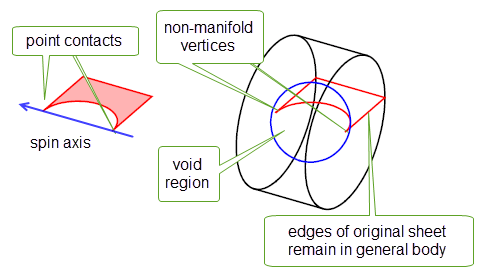
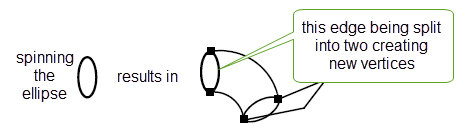
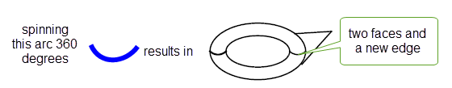
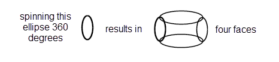

| |
Moving Faces |
| <<< Filling Holes In A Body | Chapters | Creating New Bodies From Existing Entities >>> |
This chapter describes how faces can be transformed, swept, spun or offset using Parasolid functionality.
PK_FACE_transform_2 transforms the geometry of sets of faces in a body. It fails if you attempt transforms on faces where no surface geometry exists. All faces in a face set must belong to the same body, so it is not possible to transform two bodies at the same time.
Figure 71-1 shows a body in which one face has been translated, and two have been rotated.
Figure 71-1 Transformation applied to a list of faces
PK_FACE_transform_2 allows you to perform the transformation in a variety of ways, by passing in both the following:
|
Note: This functionality offers partial support for facet geometry. |
You can use the
transform_step
option to choose whether to create step faces when performing rotation or translation transforms. This option provides the same functionality as is available for the function PK_FACE_change: see Section 73.4.3, “Transform options”, for a full description.
Figure 71-2 shows a simple example in which a step face is created when translating a face imprinted on a block.
Figure 71-2 Creating step faces when transforming faces
When features with different convexities overflow each other as a result of transformations, you can control which of the clashing features is grown to heal the model using the
grow
option.
Figure 71-3 shows a simple example of the effects that you can achieve using this functionality.
Figure 71-3 Controlling the growth of overflowing features with different convexity
This option is available in a range of different functional areas, including local operations, hollowing, and thickening. For a full description, see Section 73.5.5, “Controlling the growth of overflowing faces”.
The following functions let you spin or sweep an entity as follows:
|
Note: Except for PK_VERTEX_spin and PK_VERTEX_sweep, the functionality described in this section does not support facet geometry. |
When an entity is spun, the right hand corkscrew rule is applied to determine the direction of the spin.
It is often easiest to create a new entity to sweep or spin, rather than using an existing one. For example, when sweeping or spinning a face, you can create a face by scribing lines onto the face of a solid or sheet body to create new edges on that face. If these lines divide the existing face into several pieces, then all but one of the pieces becomes a new face. You can then sweep or spin one of the faces to extend the original solid. This technique allows you to use existing geometry to create a new entity, ensuring that the profile for the spin or sweep operation is in the right place. Figure 71-5 shows an example of this technique, in which a pocket is created on the face of a solid:
Figure 71-5 Scribing and sweeping to create a pocket
When entities are spun or swept, extra faces and edges are produced.
Any new surfaces created are analytic surfaces if possible. If it is not possible to use an analytic surface then the class of the new surface depends upon the most recent call to PK_SESSION_set_swept_spun_surfs The surface may be PK_CLASS_spun or PK_CLASS_swept if allowed, otherwise it is PK_CLASS_bsurf. The current setting is returned by PK_SESSION_ask_swept_spun_surfs.
The edges that were present before the operation still exist after the operation in general, though it is possible that they are translated or rotated as a consequence of the operation.
The exception to this rule occurs when PK_BODY_spin is called with a spin of 360°. If the surface that is attached to the face that is created by a spin of 360° is analytic or generated then the edges of the original body disappear. For example, this happens when a circle or ellipse is spun about an axis orthogonal to the circle or ellipse normal and the point, about which the circle or ellipse is spun, lies in the plane of the circle or ellipse.
When general topology is enabled in Parasolid, you can spin single faced sheet bodies that touch the spin axis at point contacts (at vertices) by 360°. This results in a general body with non-manifold vertices for every "point contact".
Figure 71-6 Spinning sheet bodies that touch the spin axis at point contacts
|
Note: Your application must merge out the edges of the original sheet body itself, if this is required. |
For information on how to enable the creation of general topology, see Section 15.8, “Creating general bodies”.
When the edges and faces are not split, as shown in Figure 71-9, Parasolid represents spun B-surface geometry as rational cubics, creating one patch for each 180 degrees of spin. When this occurs the edges are split corresponding to the patch boundary between the faces, as illustrated:
Figure 71-7 Spinning an ellipse or circular arc, that is greater than 180 degrees, by less than 180 degrees - resulting in the edge being split
Figure 71-8 Spinning an ellipse or arc, that is less than 180 degrees, or B-curve by more than 180 degrees - resulting in the face being split
Figure 71-9 A combination of the operations in Figure 71-7 and Figure 71-8
There is still an edge with the same tag as the original edge of the body, but it may split at one or more vertices.
For information on offsetting operations see Chapter 59, “Offsetting”.
| <<< Filling Holes In A Body | Chapters | Creating New Bodies From Existing Entities >>> |